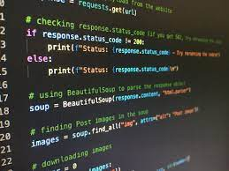

Adatbázisrendszerek

Java programozás

A tantárgy az alábbi témakörök ismeretére épít:
Objektum orientált programozás (GEIAL313-B)
A tantárgy célkitűzése:
A tárgy segít elmélyíteni az objektum orientált programozási ismereteket és Java technikákat mutatja be. Épít arra, hogy a hallgatónak már megvannak a programozási alapismeretei, valamint az objektum orientált programozás alapfogalmaival is tisztában van. A tárgy számonkérése gyakorlatias jellegű.
| Hét | Előadás anyaga |
| 1-4 | Az OOP tárgy keretén belül már megtanult részek átismétlése kiegészítve a hatékony használattal kapcsolatos ismeretekkel. |
| 5-6 | Alapvető Jáva osztályok. A java.lang csomag osztályai. |
| 7-8 | Gyűjtemény keretrendszer, nemzetközi programozás (java.util). |
| 9-11 | I/O programozás (Folyamok (Streams), szűrőfolyamok, csövek (Pipes), állomány-hozzáférés, file kezelés). |